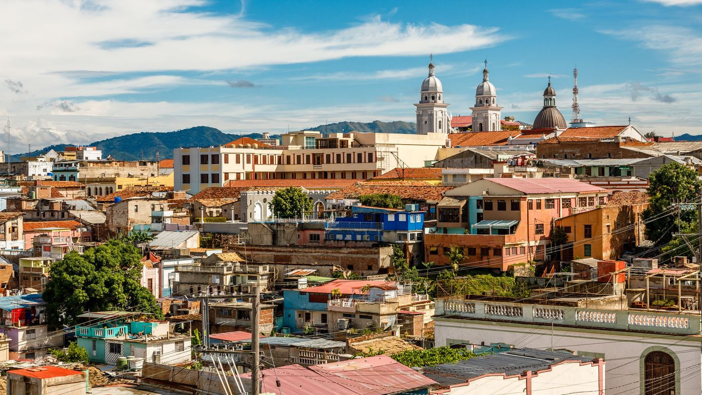
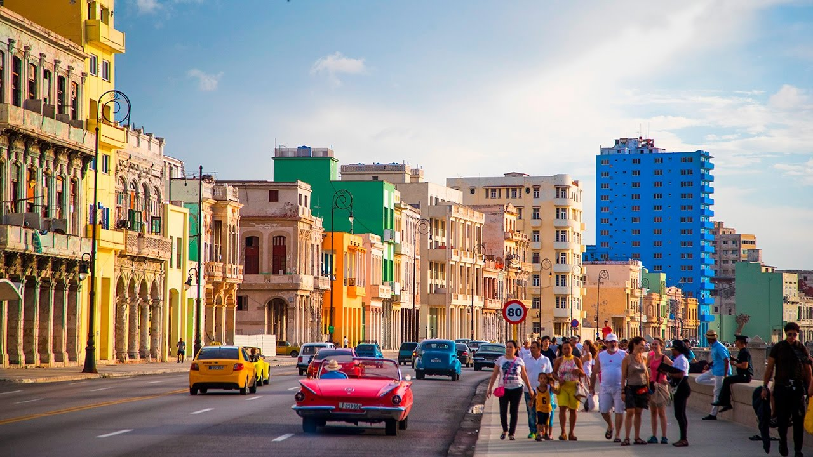
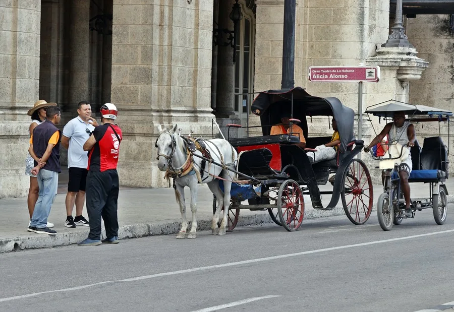

Destinos inolvidables
De la arquitectura de La Habana a las playas de Varadero y Cayo Coco.
Ver destinos →Descubre playas, ciudades históricas y experiencias únicas con Isla Tropical.
Explorar destinos → Ver circuitos →Elige por dónde comenzar tu próxima aventura.

De la arquitectura de La Habana a las playas de Varadero y Cayo Coco.
Ver destinos →
Recorridos culturales, naturaleza y viajes combinados para descubrir la isla.
Ver circuitos →
Planes de día completo, medio día y experiencias nocturnas.
Ver excursiones →Queremos acercarte a la cultura, los paisajes y la hospitalidad de Cuba.
Quiénes somos → Misión y visión →Cuéntanos qué experiencia te gustaría vivir.